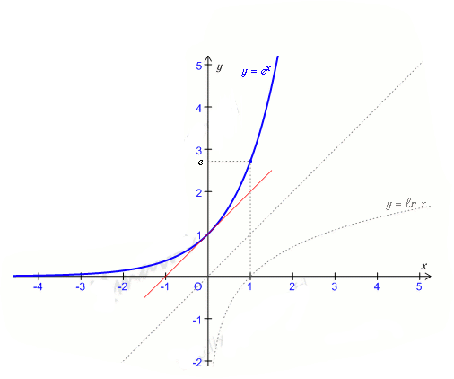

Il esxiste une unique fonction 𝑓, dérivable sur ℝ, telle que 𝑓' = 𝑓 et 𝑓(0) = 1.
Cette fonction est appélée fonction exponentielle.
On note exp : ℝ → ]0;+∞[ 𝑥 ↦ exp(𝑥) = ⅇ(𝑥)
La fonctione exponentielle est définie, continue et dérivable sur ℝ et on a (ⅇ(𝑥))' = ⅇ(𝑥) ⅇ0 = 1 ⅇ1 = ⅇ Pour tout ℝ réel on a : ⅇ(𝑥) > 0
La fonction exponentielle est strictement croissante sur ℝ.
> 0 ⇔ ⅇ(𝑥) > 1 et 𝑥 < 0 ⇔ 0 <ⅇ(𝑥)< 1.
Si 𝓊 est une fonction dérivable sur un intervalle I, la fonction composée exp ∘ 𝓊 est dérivable sur I, et on a : (exp∘ 𝓊)' =𝓊'. exp ∘ 𝓊 ou encore (ⅇ𝓊)' = 𝓊'. ⅇ𝓊
Toute fonction de la forme 𝓊'.ⅇ𝓊 a pour primitive ⅇ𝓊, sur tout intervalle dans lequel 𝓊 dérivable.
2) Relation fonctionnelle
𝑎 et 𝑏 étant deux réels on a: ⅇ𝑎+𝑏= ⅇ𝑎.ⅇ𝑏 ⅇn𝑥= (ⅇ𝑥)n pour tout n ∈ ℤ ⅇ-𝑏 = ⅟ⅇ𝑏 ⅇ𝑎-𝑏= ⅇ𝑎/ⅇ𝑏
La courbe a pour asymptote horizontale l'axe (O𝑥) quand 𝑥 tend vers ─∞.
La tangente à la courbe au point d'abscisse 0 a pour coefficient directeur 1, c'est la droite d'équation 𝗒 = 𝑥 + 1.
La courbe de la foction exponentielle est sympétrique de al courbe de la fonction 𝓁𝑛 par rapport à la droite d'équation 𝗒 = 𝑥

5) Equations différentielles
Soient 𝑎 et 𝑏 deux réels avec 𝑎 ≠ 0.
L'ensemble des solutions de l'équation différentilles 𝗒' = 𝑎𝗒 + 𝑏 est l'ensemble des fonctions définies sur ℝ par 𝑓 (𝑥) = 𝑘ⅇ𝑎𝑥 ─ 𝑏/𝑎 avec 𝑘 ∈ ℝ.
Etant donné un couple (α ; β), il existe une unique solution de l'équation différentielle 𝗒' = 𝑎𝗒 + 𝑏 vérifiant 𝗒(α) = β.
Maintenant que vous avez fini la lecon sur ce chapitre,
on vous a proposé une Quiz pour tester vous connaissance sur cette leçon.
Allez! C'est parti! Balançez-vous! Cliquer sur le smiley!